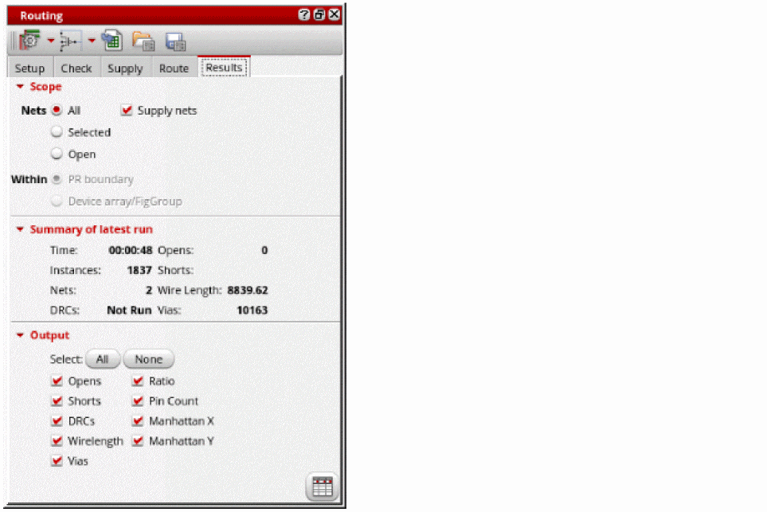
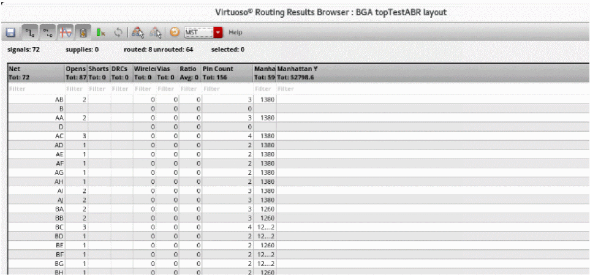

Viewing and Analyzing Device-Level Routing Results
The Routing Results Browser includes a table that displays routing results, for example the number of opens, shorts, wire length, DRC, and vias. Use this table to analyze the routing results,
To view and analyze routing results:
- Open a design in Layout MXL.
-
Choose Window – Assistants – Routing.
Alternatively, right-click anywhere on the layout window menu bar and choose Assistants – Routing. -
Click the Results tab in the Routing Assistant.
 - Select the scope of nets to analyze the routing result. You can either select All, Selected, or Open nets.
- Select Supply Nets to see the results of the power and ground nets.
-
Select All in the Output section to display all the output columns in the Routing Results Browser.
You can also select specific outputs for which you want the column to be displayed in the Routing Results Browser. -
Click Show results browser
 at the bottom right corner.
at the bottom right corner.
The Routing Results Browser appears. You can see the total number of routed nets, opens, shorts, and the details of the violations.

Related Topics
Configuring Device-Level Router Settings
Checking Layout Routability after Generating Grids and Running Device Placer
Return to top